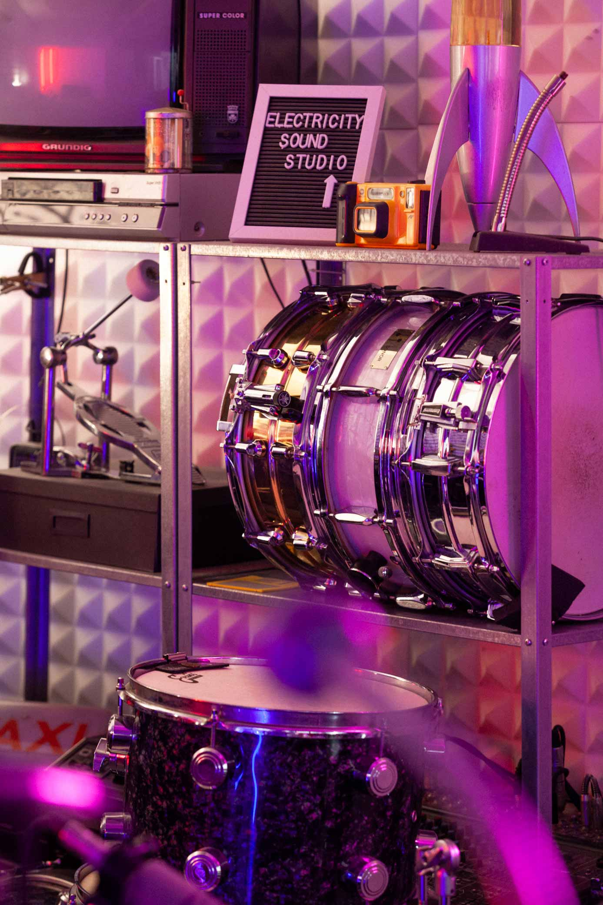
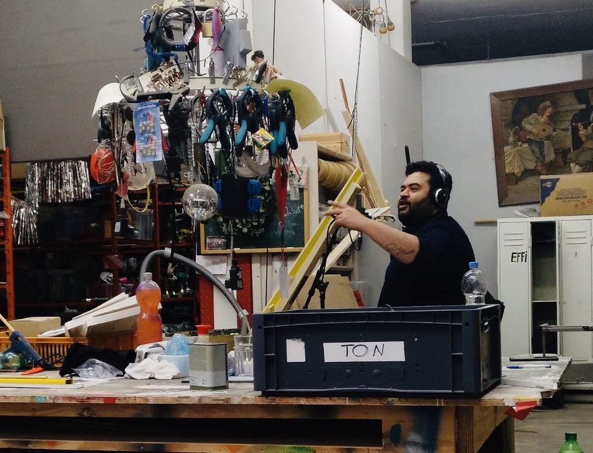

Song Development
Discover the strongest direction for your music through creative discussion, references, structure and artistic vision before production begins.
Every song begins with a conversation. We explore the artist's vision, references and emotions before shaping the creative direction together.
Through arrangement, recording, production, sound design and mixing, every decision serves the identity of the music rather than following a formula.
Discovery
Arrangement
Production
Final Master

Centaur Productions is founded by Ptolemaios Armaos , guitarist, composer and producer with a background in classical music, traditional instruments, contemporary production and international performance.
Every project is approached as a collaboration. Whether developing a demo, arranging an EP, producing a single, or refining a finished mix, the focus remains on revealing the strongest version of the artist's vision.
For specialised recording, mixing and mastering, Centaur Productions collaborates with Electricity Sound Studio and Sweetspot Productions .
Every service is designed to guide artists through one continuous creative process, ensuring consistency from songwriting to the finished record.
Discover the strongest direction for your music through creative discussion, references, structure and artistic vision before production begins.
Shape every layer of the song through instrumentation, orchestration, harmony and performance choices that support its identity.
Capture expressive performances in a comfortable recording environment, whether acoustic, electric or vocal.
Build the sonic character of the music through texture, ambience, rhythm, editing and creative production decisions.
Balance, depth and clarity come together through careful mixing and mastering, delivering a production ready for every listening platform.
Prepare your music for release with practical guidance on presentation, scheduling and the next steps after the final master is complete.
Projects inspired by Greek and Mediterranean musical heritage, traditional instruments and contemporary arrangements.

Artist-focused productions developed through collaboration, arrangement and creative exploration.

Modern productions combining songwriting, performance and detailed sound design.

Performances and collaborations exploring cinematic sound worlds through traditional and contemporary instruments.
Tell us about your next musical project.